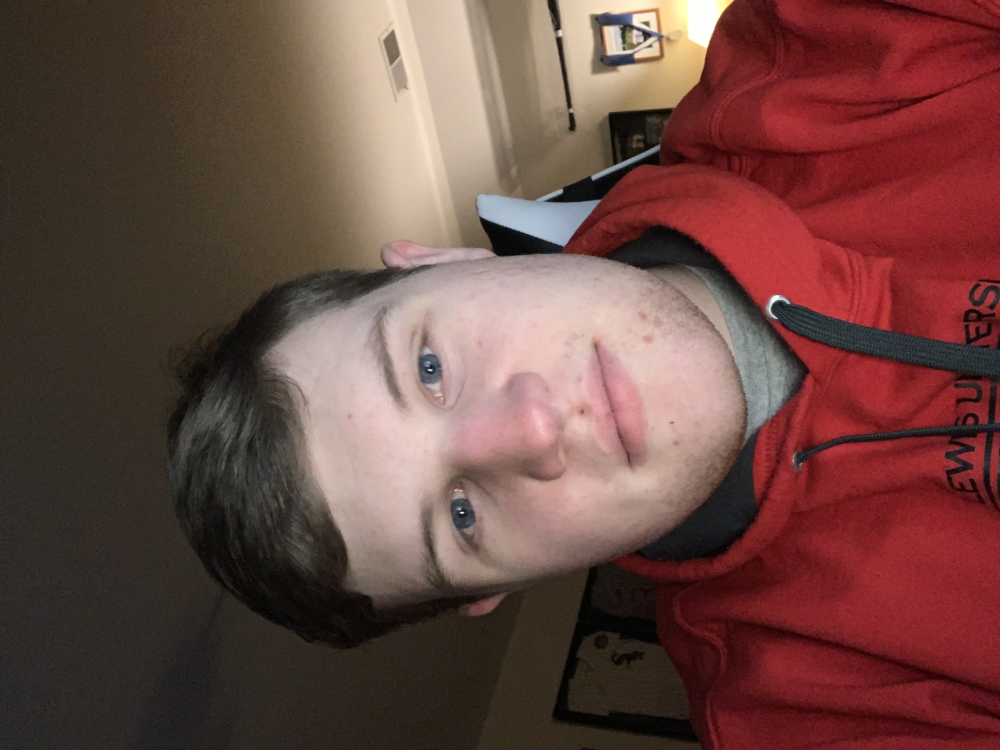

Billy
Hi, my name is William Cyze but you can call me Billy! This is my website for my Introduction to Computer Science class at Lewis University. I guess I should tell you a little bit about me. I am a freshman at Lewis University. I come from a family of six kids, with me being the third child. I am a very driven and hard working individual who loves all technology. While in high school, I joined the robotics team, I founded the drone club, was in the sound crew club, worked at the school for three summers, and so much more. I am majoring in Unmanned Aircraft Systems at Lewis University, and I am thinking of possibly a minor in cyber security. I have joined the Lewis University Counter-Strike: Global Offensive E-Sports team, and I hope to join the drone racing team once Covid has passed. If you'd like to find out more about me, you can contact me through my email at the top of the page!
My favorite hobby is learning about and using new technology. I have loved to work with technology for a very long time. I have been known to dissemble old computers that no longer work to learn about how the internal components work together. This fascination has lead me to learn so much about how computers are put together. I love to expand my knowledge about technology to know how to fix any problems that come up with the technology of my friends and family. My other favorite hobby is flying an airplane. I am currently learning how to fly an airplane in order to get my private pilot's license. Flying is a very liberating and calming experience, since it is just you, the plane, and the sky.
I have my drone license and a student pilots license that will turn into a private pilot license